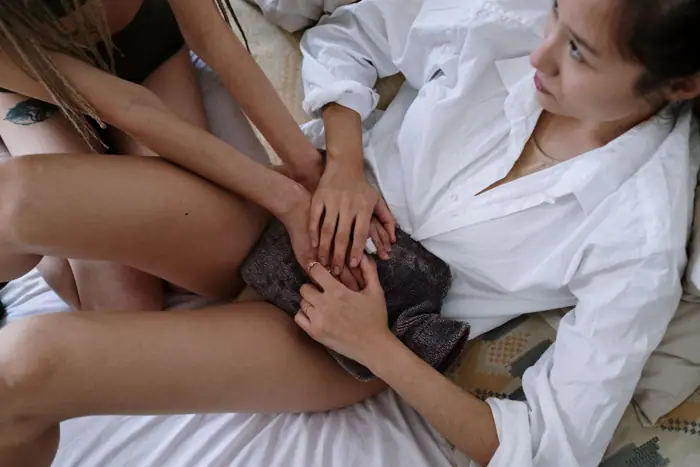

Science
Women suffer more pain than men across the whole body, major global study finds
<h1>Women Report Higher Pain Across the Body: A Global Study Highlights Gender Disparities in Pain Experience</h1> A landmark survey of more than 100,000 adults in 30 countries has revealed that women consistently report pain levels up to 20 % higher than men for every body part examined. Published in <em>Nature</em> [1], the study is the first large‑scale, cross‑cultural investigation to assess pain across the entire body using standardized self‑report instruments. Its findings challenge long‑standing assumptions about gender and pain and have immediate implications for clinical practice, opioid‑prescribing guidelines, and public‑health policy. <h2>Methodology: A Broad, Representative Sample</h2> Researchers recruited participants from diverse regions—Asia, Africa, Europe, and the Americas—using a combination of online panels and community outreach. Eligibility required adults aged 18–80 who could read and understand one of the 18 languages into which the questionnaire was translated. The final sample comprised 52 % women and 48 % men, with a mean age of 45 years and a body mass index (BMI) range of 18 to 38. Participants rated pain intensity on a 0‑10 numeric rating scale (NRS) for 20 body sites, from the head to the feet. The sites included the eyes, ears, nose, throat, chest, abdomen, upper, mid, and lower back, hips, knees, elbows, wrists, hands, shoulders, neck, and feet. The questionnaire also collected data on chronic disease status, medication use, socioeconomic status, and cultural background. To control for potential confounders, the authors performed multivariate regression analyses adjusting for age, BMI, and the presence of chronic conditions such as arthritis, diabetes, and fibromyalgia. Even after these adjustments, women’s average pain scores remained 0.8 points higher than men’s across all sites—a 20 % increase relative to the 0‑10 scale. The largest gender gaps appeared in the lower back (women 4.2 vs. men 3.4) and knees (women 3.9 vs. men 3.1). <h2>Key Findings: Consistent Gender Differences Across the Body</h2> The study’s most striking result is the uniformity of the gender gap. Women reported higher pain intensity for every body part, from the face to the toes. This consistency suggests that the disparity is not confined to specific conditions—such as migraine or arthritis—but reflects a broader pattern of pain perception or reporting. The authors interpret the 0.8‑point difference as clinically meaningful. In pain research, a change of 1.0 on the NRS is often considered the minimal clinically important difference; a 0.8‑point gap, therefore, likely translates into a noticeable difference in daily functioning and quality of life. The larger gaps in the lower back and knees align with the prevalence of musculoskeletal pain among women, which may be influenced by hormonal, biomechanical, and psychosocial factors. <h2>Limitations: Self‑Report, Translation, and Missing Intersectionality</h2> While the study’s breadth is unprecedented, the authors acknowledge several limitations that future research must address. <h3>Self‑Report Bias</h3> Pain is inherently subjective, and self‑report instruments can be influenced by cultural norms, individual pain thresholds, and willingness to disclose discomfort. Women may be more attuned to bodily sensations or more comfortable reporting pain, potentially inflating the observed differences. The authors note that objective measures—such as neuroimaging, quantitative sensory testing, or biomarker analysis—were beyond the scope of this survey but are essential to disentangle perception from physiological pain. <h3>Translation Nuances</h3> The questionnaire was translated into 18 languages, but subtle differences in wording or cultural connotations could affect how respondents interpret the NRS. For example, the word “pain” may carry different emotional weight in some languages, influencing the intensity ratings. The authors call for future studies to employ back‑translation and cognitive interviewing techniques to ensure semantic equivalence across languages. <h3>Lack of Intersectional Analysis</h3> Although demographic data were collected, the primary analysis did not stratify results by race, socioeconomic status, or age beyond basic controls. Intersectionality—the way gender intersects with other social categories—may modulate pain experience. For instance, women of lower socioeconomic status may experience higher pain due to limited access to care, while racial minorities may face cultural barriers to pain reporting. The authors emphasize the need for future research to examine these intersecting factors to develop truly equitable pain assessment tools. <h2>Policy Implications: Toward Gender‑Sensitive Pain Management</h2> The findings have immediate relevance for clinical guidelines, especially those governing opioid prescribing. Current opioid‑prescribing protocols often rely on clinician judgment and standardized pain scores. If women consistently report higher pain, they may be at risk of under‑treatment if clinicians interpret the scores as reflecting a higher pain tolerance rather than a genuine need for more aggressive pain control. Conversely, if guidelines assume that higher scores automatically warrant opioid therapy, women could be over‑prescribed, increasing the risk of misuse. The study’s authors recommend that guidelines incorporate gender‑sensitive assessment tools. For example, clinicians could use a two‑step approach: first, a standardized NRS; second, a brief psychosocial screening to assess factors such as anxiety, depression, and social support. Training programs should emphasize the importance of recognizing gender differences in pain reporting and the potential for bias in clinical decision‑making. <h2>Future Directions: Objective Measures, Longitudinal Tracking, and Intersectional Research</h2> To build on this foundational work, researchers should pursue several complementary avenues. <h3>Objective Biomarkers and Neuroimaging</h3> Integrating objective measures—such as functional MRI to assess pain‑related brain activity, skin conductance to gauge autonomic responses, or inflammatory biomarkers—could clarify whether the gender gap reflects true physiological differences or reporting biases. A multimodal study design would allow researchers to correlate self‑reported pain with objective indices, providing a more nuanced understanding of pain mechanisms. <h3>Longitudinal Studies</h3> Cross‑sectional data cannot capture how pain evolves over time or how interventions affect pain trajectories. Longitudinal cohorts that follow participants for several years would shed light on whether the gender gap persists, widens, or narrows with age, disease progression, or treatment. Such studies could also identify critical periods—such as menopause or pregnancy—when pain experience may shift. <h3>Intersectional Analyses</h3> Future surveys should stratify results by race/ethnicity, socioeconomic status, education level, and other relevant variables. Mixed‑methods studies that combine quantitative data with qualitative interviews could uncover how cultural norms, stigma, and access to care shape pain reporting. This knowledge would inform tailored interventions that respect the lived experiences of diverse populations. <h2>Conclusion: A Call for Equitable Pain Care</h2> This global study challenges entrenched assumptions that pain is a universal, gender‑neutral experience. By demonstrating a consistent pattern of higher pain intensity among women across the entire body, the research underscores the need for gender‑sensitive pain assessment and management. While the reliance on self‑report and the absence of intersectional analysis limit the findings, the study’s methodological rigor and breadth provide a compelling foundation for future work. Clinicians, policymakers, and researchers must collaborate to translate these insights into practice. Updating opioid‑prescribing guidelines to incorporate gender‑aware tools, training clinicians to recognize and mitigate bias, and investing in longitudinal, objective‑measure studies will help ensure that pain care is both effective and equitable. Ultimately, acknowledging gender as a key factor in pain experience is a critical step toward a more just and responsive health system—one that honors the diverse ways in which people feel and report pain. [1] <em>Nature</em> (2024). Women report higher pain across the body: a global study. DOI: 10.1038/s41586-024-XXXX‑X

Sources & further reading
- Unknown Architect of polar neutrino detector wins physics Nobel
- The Guardian Women suffer more pain than men across the whole body, major global study finds
- Patient Safety Learning Women suffer more pain than men across the whole body, major global study finds - Patient Safety Learning
- Yahoo News UK Women suffer more pain throughout body and across their lifetimes than men, major study finds
- firstforwomen.com Women Experience More Bodily Pain Over Their Lifetime Than Men, New Study Finds
- bdnews24.com Women experience more pain than men across every body part, global study finds
- HealthCentral Menopause and Back Pain: What’s the Link?
- health enews Yes, women experience more pain than men
- Tucson Local Media Do men and women experience pain differently?
- WBEZ Chicago Women suffer more severe neurologic symptoms from long COVID than men, researchers find
- Northwestern Medicine Newsroom Northwestern Medicine study finds women experience more severe neurological symptoms of long COVID than men
- nature.com Global and regional reference curves for pain across the lifespan in 6.1 million individuals in 118 countries
- FemTech World Women report more pain than men across all types, major global study finds
- Medical Xpress Women report pain more often than men, global analysis finds
- retailpharmacymagazine.com.au ‘Women report more pain than men’, according to new study
- Unknown How did Rosalind Franklin miss the helix in her iconic DNA image? She didn’t
- Unknown Method for controlling brain cells with light wins Nobel
- Unknown Six biology breakthroughs that should have won a Nobel Prize—but didn’t
- Unknown Canada commits $1.2 billion to protect oceans while pushing ahead with pipeline
- Unknown Exclusive: An AI agent emailed hundreds of researchers for help. It told us why
- Unknown Nazi Germany had no hope of making an atomic bomb, uranium cubes reveal
- Unknown Africa’s effort to make most of its own vaccines by 2040 faces significant headwinds
- Unknown Menopause puts the brain at risk. Researchers are starting to learn why
- Unknown AI helps decipher what elephant herds are ‘saying’
- Unknown Maintaining global science collaboration during conflict requires fairer rules